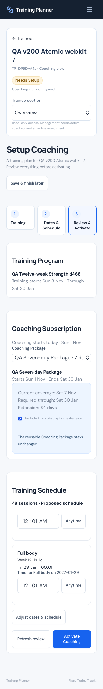
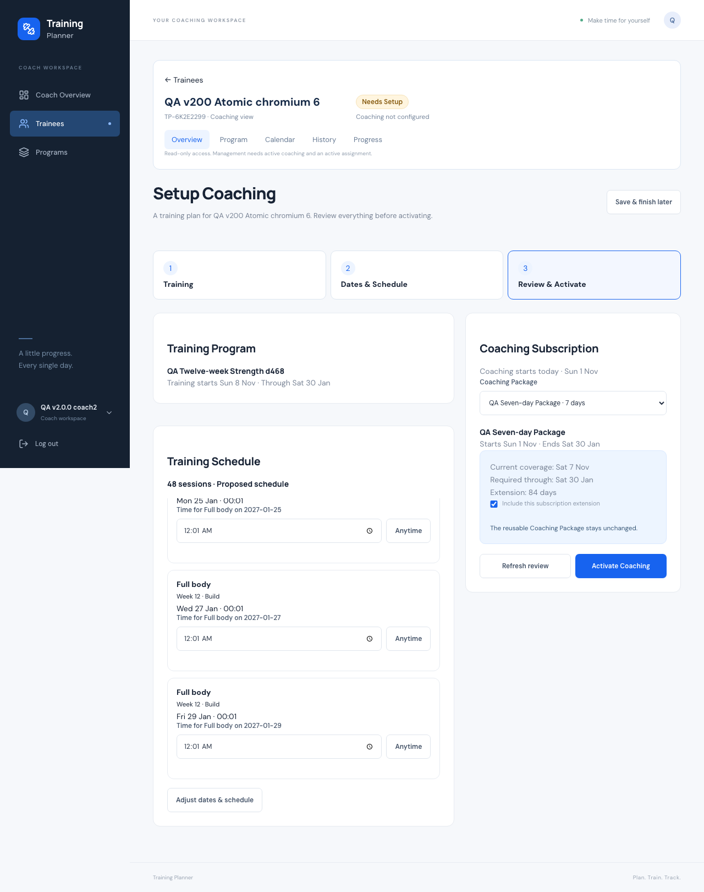

All 60 sections
01 / 60
Baseline
Accepted application source is v2.3.0 (d0ef293aec2465922328469fea2a7d3013075b79). Work began on main at fbbb065c688ea0800322a4d060dd4840c38c3d7c with a clean tree; intervening baseline commits contain deployment documentation. Existing Laravel, Inertia, React, authentication and domain services are retained.
02 / 60
Previous Coach setup problem
The subscription-first sequence exposed internal modules before the Coach had chosen training. Early step submissions created partial active records. Null workout times could be interpreted as midnight, which made today’s workout appear elapsed and caused confusing schedule errors.
03 / 60
New simplified flow
Trainee → Training Program → Dates & Schedule → Review subscription and Calendar → Activate Coaching. Selection and Finish Later save only a draft. Activation is one reviewed, atomic operation. Normal later assignments continue through the existing assignment flow.
04 / 60
Terminology
Training Program describes the selected structured program or simple plan. Coaching Package is the reusable Coach template. Coaching Subscription is the trainee’s actual service period. These remain separate models; UI simplification does not merge ownership or scheduling domains.
05 / 60
Trainee context
The existing persistent trainee header remains visible with the trainee’s name, Training Planner ID and context navigation. Activation returns to that trainee’s Overview. Personal Workspace never inherits a selected trainee context.
06 / 60
Program-first selection
My Programs, My Plans and already assigned training are offered before subscription configuration. Preview opens the existing plan/program screen. Create Training reuses the Coach template builder; Refresh training list brings the new template into setup. No assignment occurs on selection.
07 / 60
Dates and scheduling
Structured programs retain authored blocks, duration and weekday rules. Coaches may adjust weekdays and optional times on the eventual independent copy. Fixed simple plans retain their reviewed range; ongoing plans retain the 90-day horizon. Existing configured schedules are preserved, including schedules whose occurrences were cancelled.
08 / 60
Anytime-today semantics
A null time on today’s application-local date remains available through 23:59 and becomes elapsed only after midnight. A specific time becomes elapsed at that timestamp. No invented 00:00 time or timed reminder is assigned to an untimed workout.
09 / 60
Central date/time source of truth
WorkoutDate supplies equivalent scalar elapsed()/due() and query whereElapsed()/whereDue() predicates using config(app.timezone), currently Asia/Riyadh. ScheduleEntry upcoming/past/history scopes, CoachAccess, PlanSchedule and WorkoutReminders call this implementation. ProgramSchedule, ProgramControl, ProgramLifecycle and Coach summaries consume those shared checks.
10 / 60
History consistency
History includes completed/skipped sessions regardless of scheduled date or time, including early completion and future corrected dates. Unresolved untimed today is excluded until the day elapses. Completed/skipped outcomes count in progress and adherence immediately; a finished Anytime workout never waits until midnight to count. A same-day SQLite date-vs-datetime comparison was corrected so a paused program cannot leak a held occurrence into availability.
11 / 60
Coaching starts today
New activation and renewal use the server’s current application-local date. Preview displays this date and binds it into the signed review. Midnight invalidates a stale preview. Reused active subscriptions preserve their original start; an explicitly reviewed resume retains the existing period.
12 / 60
Training may start later
Training can begin next week while coaching starts today. Both dates appear together. HTTP and browser tests activate a future 12-week program while verifying today’s subscription start. No session is silently moved to make the dates fit.
13 / 60
Subscription preview
Review shows current and proposed subscription, operation, package coverage, required coverage, extension days, training dates and every proposed occurrence. Reused schedules are identified. The Coach can choose a package or custom/ongoing coverage and refresh the signed review.
14 / 60
Finite Program coverage
Required coverage is the later of the actual program duration end and the last proposed/existing scheduled occurrence. Fixed simple plans require their reviewed end date. Coverage is calculated from real definitions and schedules rather than guessed from the package label.
15 / 60
Explicit subscription extension
A short package produces a coverage issue and disables activation. The Coach explicitly includes the extension, which regenerates the review and signature. Tests cover a seven-day package with a 12-week program; the actual subscription is extended while the reusable package stays seven days.
16 / 60
Never shorten coverage
Existing later coverage wins. An active period’s original start is retained. Ongoing coverage is never converted to finite coverage. Activation re-reads the period under locks, and a changed subscription invalidates the old signature.
17 / 60
Ongoing subscription behavior
An existing ongoing subscription remains ongoing, including when the training program is finite. Choosing an ongoing package creates an ongoing actual subscription without an artificial end date. This is distinct from an ongoing simple-plan schedule.
18 / 60
Simple Plan behavior
Fixed and ongoing modes continue using PlanSchedule. New ongoing setup reviews the full rolling window and reports uncovered rows, requiring an explicit coverage correction. Previously configured schedules and cancellation tombstones are preserved during renewal rather than restarted.
19 / 60
Actionable validation
Invalid proposed occurrences remain in the review with workout title, date, time and reason. Elapsed and uncovered rows block activation. Missing/deleted templates and packages produce actionable selection issues. A final inserted-count assertion protects against accidental schedule omission.
20 / 60
Inline corrections
Each new occurrence has a time correction and Anytime action. Correcting a row updates the draft and produces a new signed preview. Subscription extension is corrected in the same review. Existing schedules stay protected and direct the Coach to established Calendar/program controls.
21 / 60
Draft JSON architecture
Exactly one nullable setup_draft JSON field was added to coach_trainee_relationships, using an array cast. It contains version, revision, choices, random token, saved timestamp and completed receipt. It contains no full definitions, exercise collections, schedule snapshots or media. Submitted choices are capped at 64 KB.
22 / 60
Draft security
The JSON field is hidden from ordinary relationship serialization and is not mass assignable. Resource ownership and relationship consent are checked on save, preview and activation. Client ownership/result IDs are not accepted as authoritative. A draft grants no subscription or assignment permissions.
23 / 60
Draft revision
Meaningful saves increment revision under the relationship lock. Conflicting saves return 409; a changed revision invalidates an earlier review. MySQL may reorder JSON object keys, so equivalent key ordering is treated as the same choices and does not create a false revision change.
24 / 60
Activation token
A server-generated random UUID is scoped to the relationship’s current draft. It is not derived from a user ID or timestamp. Restarting setup for an explicit resume/renew rotates the token. A completed active setup directs future training changes to the normal assignment flow.
25 / 60
Preview architecture
CoachSetup is a focused coordinator over existing subscription, duplication and scheduling services. Preview recomputes under the existing user/relationship lock order and creates no active records, copies no media, triggers no rolling refresh/lifecycle synchronization and sends no notification. HMAC binds identities, resources, revision, dates, proposed rows and coverage.
26 / 60
Atomic activation
Final activation locks users in the existing order, re-reads the relationship and resources, and recomputes the signed preview. Subscription, independent copy/assignment, run/sessions and receipt commit together. A failure at subscription, copying or schedule creation rolls back all database writes.
27 / 60
Idempotency
The same completed token returns the stored result after consent/authorization checks. Independent PHP processes exercised double activation, resume and renewal, concurrent draft edits and old/new revision races. There is one subscription period, matching assignment, run and occurrence set; no mixed revision state.
28 / 60
Existing subscription reuse
An effective active period is reused. No overlapping period is created by retry. Existing partial setups are recognized: subscription only, assignment without schedule, and already scheduled program. Selected-template matching prevents an unrelated newest assignment from being reused.
29 / 60
Resume Coaching
A paused subscription exposes Resume Coaching directly on Overview. Review explicitly states that coaching will resume today; activation reuses the same period. Program pause remains a separate lifecycle state and does not display Resume Coaching when the subscription is active.
30 / 60
Renew Coaching
Expired/ended periods remain historical. Renew Coaching is prominent on Overview and creates a new period starting today. Concurrent renewals create only one new period. The previous record’s dates/status remain unchanged, and the existing training run is preserved.
31 / 60
Existing assignment reuse
Setup matches the selected source template or an explicitly selected owned assignment. It reuses that independent trainee copy where appropriate. Ownership and active relationship/assignment state are revalidated. Explicit new training outside setup remains in the existing assignment workflow.
32 / 60
Existing Run protection
A previously scheduled program is never restarted at Week 1 by setup. The run and existing occurrences are shown as preserved; draft weekday/time changes are rejected for that schedule. Any later shift, pause, end or future-block edit uses the original controls and protections.
33 / 60
Media rollback
TrainingPlanDuplicator shares its newly copied paths with the outer activation operation. ProgramSchedule adds copied prescription media to that same registry. Exceptions delete only new paths after rollback. Failure tests preserve original source media and leave no subscription, assignment, run, sessions or orphan copies.
34 / 60
Notification deduplication
Inner assignment/scheduling notifications are suppressed for combined activation. One coach_setup event is queued after successful commit, keyed by the activation token. Drafts/previews send none; retry sends no duplicate. A simulated delivery-storage failure leaves the committed activation intact.
35 / 60
Mobile-first UI
Training, dates, subscription and schedule stack on phones. Schedule review uses scrollable cards, not a squeezed table, and keeps the final action reachable on 320 × 480. Inputs use 16 px text and approximately 44 px controls. Complete 48-occurrence activation was exercised at all eight viewports in both engines.




36 / 60
Coach Workspace regression
The operational overview, roster table, mobile cards, filters, add-trainee request, template library, persistent context and in-context Calendar/History/Progress remain intact. Browser tests include direct Activate/Resume/Renew and read-only access after coaching ends.
37 / 60
Personal Workspace regression
Personal programs/plans, structured actual sets, zero-weight reps, supersets, duration, rest timer, preferences, Progress/PRs, History and program lifecycle controls were retested. Coach access never becomes permission to start, finish or alter the trainee’s performance records.
38 / 60
PWA regression
Existing manifest, service worker, install guidance, offline fallback, update controls and notification settings are retained. Chromium/WebKit tests exercise actual service-worker registration, cache/update behavior and offline origin failure. Browser Push permission/provider behavior is simulated; no real external delivery is claimed.
39 / 60
Security and IDOR
Tests cover foreign template/package/assignment selections, other-coach setup access, trainee Coach endpoints, revoked consent, stale reviews, forged result/ownership data and protected performance writes. Completed receipt replay also rechecks consent. Existing authentication and CoachAccess remain authoritative.
40 / 60
Query/performance findings
A representative Coach with 63 accepted relationships and a 364-workout program was measured locally. Preview: 14 SELECTs, 14.84 ms. Activation: 444 total queries including 364 occurrence inserts, 65 SELECTs, 214.14 ms. Roster: 7 queries; Overview: 16; trainee console: 34; setup before/after: 16. No exercise/set-history N+1 was introduced. These are local measurements, not production latency guarantees.
41 / 60
SQLite results
The complete SQLite suite passes: 601 tests and 11,887 assertions. Tests include null/zero-weight preservation, midnight and exact timed boundaries, active/paused/end controls, notification behavior, rollback and the new atomic setup contract.
42 / 60
MySQL results
The same complete isolated MySQL suite passes: 601 tests and 11,887 assertions. JSON casts, meaningful revisions despite key ordering, SQL date predicates and lifecycle tests use the production database family’s behavior; no production database was used for this suite.
43 / 60
Concurrency
All six real-process suites run against isolated MySQL: Coaching, RecurringSchedule, Program, ProgramControl, Notification and CoachSetup. The new setup suite has 29 checks across double Activate/Resume/Renew, competing draft revisions, current-vs-stale activation and revoked consent. Earlier concurrency protections remain in place.
44 / 60
JavaScript tests
All 37 JavaScript tests pass. New client behavior is verified through real browser interactions, including saving a draft, coverage correction, elapsed-time correction, retry-safe activation and the short-screen action path.
45 / 60
Browser tests
All 22 source browser suite/engine combinations pass. Both Chromium and WebKit complete the new setup at 320, 360, 375, 390, 430, 768 and 1280 px, plus 320 × 480. Regression covers Personal, Coach, Calendar, programs, lifecycle and PWA. Fixture ordering and loopback-only authentication throttle state were corrected in the QA harness; production throttles are unchanged.
46 / 60
Production build
npm run build passes against the final source. The deployable build is produced again from the immutable release archive and its hashes are verified on the origin. PWA update tests restore the original service-worker source after their temporary test rebuild.
47 / 60
Composer validation and audit
Composer strict validation passes. The locked dependency audit reports zero advisories and zero abandoned packages. Dependencies were not upgraded for this release. Production compatibility is checked against the actual Hostinger PHP runtime and locked vendor files.
48 / 60
Formatting and diff checks
Pint, Prettier for changed frontend/browser files, and git diff --check pass. Existing source style is retained. Test expectations were changed only where the accepted Anytime-today and completed/skipped History behavior intentionally changes the result.
49 / 60
Data/media integrity
Disposable local QA records/media are removed after browser/HTTP verification. Original fingerprints cover 22 application tables and the original upload hashes. Comparison excludes only the newly added nullable column from the pre-migration fingerprint and separately asserts original relationship drafts remain null.
50 / 60
Migration
One additive migration: 2026_11_01_000015_add_coach_setup_draft adds nullable JSON setup_draft. No new setup table, parallel activation schema or speculative index was added. Production’s migration history is checked before applying only pending additive migrations.
51 / 60
Files added and changed
New production files: CoachSetup coordinator, WorkoutDate semantics helper and the single draft migration. Existing setup controller/routes, subscription/duplication/schedule services, relationship model, History/availability scopes, notification hook and Coach UI were extended. Focused unit, feature, concurrency and browser coverage accompanies the changes. The full file list is included below.
Changed source and test files
CHANGELOG.mdREADME.mdapp/Http/Controllers/CoachController.phpapp/Http/Controllers/CoachSetupController.phpapp/Http/Controllers/ProgressController.phpapp/Models/CoachTraineeRelationship.phpapp/Models/ScheduleEntry.phpapp/Services/CoachAccess.phpapp/Services/CoachSetup.phpapp/Services/CoachWorkspaceSummary.phpapp/Services/CoachingSubscriptions.phpapp/Services/Notifications/CoachNotifications.phpapp/Services/Notifications/WorkoutReminders.phpapp/Services/PlanSchedule.phpapp/Services/ProgramControl.phpapp/Services/ProgramLifecycle.phpapp/Services/ProgramSchedule.phpapp/Services/TrainingPlanDuplicator.phpapp/Services/WorkoutDate.phpdatabase/migrations/2026_11_01_000015_add_coach_setup_draft.phpresources/css/coaching.cssresources/js/Features/CoachingForms.jsxresources/js/Pages/Calendar/Index.jsxresources/js/Pages/Coach/ManageCoaching.jsxresources/js/Pages/Coach/SetupTrainee.jsxresources/js/Pages/Coach/Trainee.jsxroutes/web.phptests/Browser/atomic-coach-setup.mjstests/Browser/coach-workspace.mjstests/Concurrency/CoachSetupConcurrency.phptests/Feature/ActiveWorkoutTest.phptests/Feature/AtomicCoachSetupTest.phptests/Feature/CoachNotificationsTest.phptests/Feature/CoachWorkspaceTest.phptests/Feature/PlanManagementTest.phptests/Feature/ProfileProgressTest.phptests/Feature/ProgramControlTest.phptests/Feature/ProgramLifecycleStabilizationTest.phptests/Feature/RecurringScheduleTest.phptests/Feature/TrainingHistoryTest.php
52 / 60
Commit
The immutable application release is identified by the annotated v2.3.1 tag. Deployment evidence is recorded in a later documentation-only commit so the application tag does not move. The exact peeled commit is recorded in the deployment evidence once released.
53 / 60
v2.3.1 tag
Release target: v2.3.1. Earlier tags including v2.3.0, v2.2.0 and v2.1.1 are preserved. No force push or replacement tag is permitted. Local and remote tag/branch references are compared after push.
54 / 60
Deployment process
Deployment is pending. This section will be updated from the production verification record; no deployment success is claimed.
55 / 60
Live smoke tests
Deployment is pending. This section will be updated from the production verification record; no deployment success is claimed.
56 / 60
Production cleanup
Deployment is pending. This section will be updated from the production verification record; no deployment success is claimed.
57 / 60
Production integrity
Deployment is pending. This section will be updated from the production verification record; no deployment success is claimed.
58 / 60
Push/PWA live state
Deployment is pending. This section will be updated from the production verification record; no deployment success is claimed.
59 / 60
Known limitations
No physical handset was available; mobile verification is responsive Chromium/WebKit testing. Live Push delivery remains governed by the existing approved configuration; this release does not generate VAPID credentials or enable cron. Setup creates no new training-template system, and existing scheduled programs must be changed through the established controls. No later release was started.
60 / 60
Final READY / NOT READY
NOT READY — source verification is documented; deployment and final integrity checks must complete before the status becomes READY.